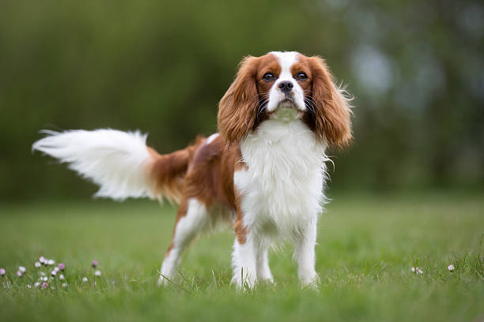

Tame Dog Breeds
Why are these dogs known for their tame nature?
Tame dog breeds are known for their gentle, calm, and affectionate nature, making them ideal companions for families and individuals seeking a peaceful, loving pet. These breeds are typically easy to train and are less likely to exhibit aggressive tendencies, making them great choices for households with children or other pets. Tame breeds are often patient and enjoy being around people, providing warmth and comfort to their owners.
Beagle
Origin
England
Price
$400 - $1,200
Lifespan
12-15 years
Full Description
Beagles are a small to medium-sized breed that is widely known for their friendly and curious nature. Originating in England, they were bred primarily as hunting dogs due to their excellent sense of smell and stamina. Beagles are highly social dogs, making them great family pets. They have an easygoing and affectionate temperament and are very playful, which makes them excellent companions for children. Beagles are also very active and need plenty of exercise, especially walks and playtime. Their short coat requires minimal grooming, and they are typically healthy dogs, though they can be prone to obesity if not properly exercised.
For more information...Cavalier King Charles Spaniel
Origin
England
Price
$1,000 - $3,500
Lifespan
9-14 years
Full Description
The Cavalier King Charles Spaniel is a small, affectionate breed that is known for its gentle demeanor and calm personality. They are ideal pets for people seeking a lapdog with a friendly nature. Cavaliers are often described as eager to please and enjoy being around people. They are great with children and other pets, making them perfect for multi-pet households. Their small size and low exercise requirements make them ideal for apartment living.
For more information...Shih Tzu
Origin
Tibet
Price
$500 - $1,500
Lifespan
10-16 years
Full Description
Shih Tzus are affectionate, friendly dogs that are often described as "lapdogs." They are well-known for their calm, gentle nature and are perfect companions for people seeking a loving and low-energy pet. Shih Tzus are adaptable to apartment living and are great with children and other pets. They are particularly famous for their long, beautiful coat and cheerful disposition.
For more information...Why Tame Dogs Are Better Than Aggressive Dogs:
1. Safer for Families and Children
Tame dogs are generally more tolerant and calm, making them safer for families, especially those with young children. Their gentle nature makes them better companions for kids, reducing the risk of bites or aggression. These dogs are more likely to be patient and understanding in a household environment.
2. Easier to Train
Tame dogs are typically easier to train because of their calm and obedient nature. They respond well to positive reinforcement, and their mild temperament makes them more receptive to commands and training exercises. This can make them ideal pets for first-time dog owners.
3. Better Socialization
Tame dogs are often more social and open to meeting new people, other animals, and experiencing new environments. This makes them ideal for families that love to socialize and introduce their pets to different experiences. Their friendly demeanor helps them adapt better in social settings.
4. Less Stressful to Handle
Tame dogs tend to be easier to handle, as their gentle disposition requires less management from owners. This makes them less stressful to care for, and it's easier for owners to ensure their dogs are comfortable in various situations, like visiting the vet or taking trips to the park.
5. Reduced Aggression Issues
Because tame dogs are naturally calm, they are less likely to engage in aggressive behavior, reducing the risk of fights with other dogs or becoming a threat to strangers. They are more likely to get along with other pets and animals, which makes them a good choice for multi-pet households.
Why Aggressive Dogs Are Better Than Tame Dogs:
1. Better Protection and Guarding
Aggressive dogs, due to their protective instincts, can serve as excellent guard dogs. They are more likely to be wary of strangers, making them effective in protecting their homes, property, and loved ones. Their natural territorial behavior makes them excellent watchdogs, alerting owners of potential threats.
2. Ideal for Certain Working Roles
Some aggressive dogs, like certain breeds of German Shepherds or Rottweilers, are trained to perform essential roles in police, military, or search-and-rescue missions. Their courage, intelligence, and natural aggression make them highly suitable for high-stakes tasks where protection, defense, and precision are key.
3. Strong Loyalty and Bond
Aggressive dogs, when properly trained, often develop an intense bond with their owners. This loyalty makes them extremely protective and dependable companions. Their territorial nature can make them incredibly devoted to their family members, sometimes to the point of being overly protective.
4. Great for Active or Sports-Related Activities
Aggressive dogs tend to have higher energy levels and drive, making them well-suited for activities like dog sports, hunting, and agility trials. Their intense focus and competitiveness can lead to great success in these types of activities. They excel in environments that require strength, speed, and determination.
5. Can Discourage Intruders
The intimidating presence of an aggressive dog can act as a deterrent for intruders or burglars. Their natural protective instincts and willingness to defend their home make them effective in discouraging potential threats from approaching your property.